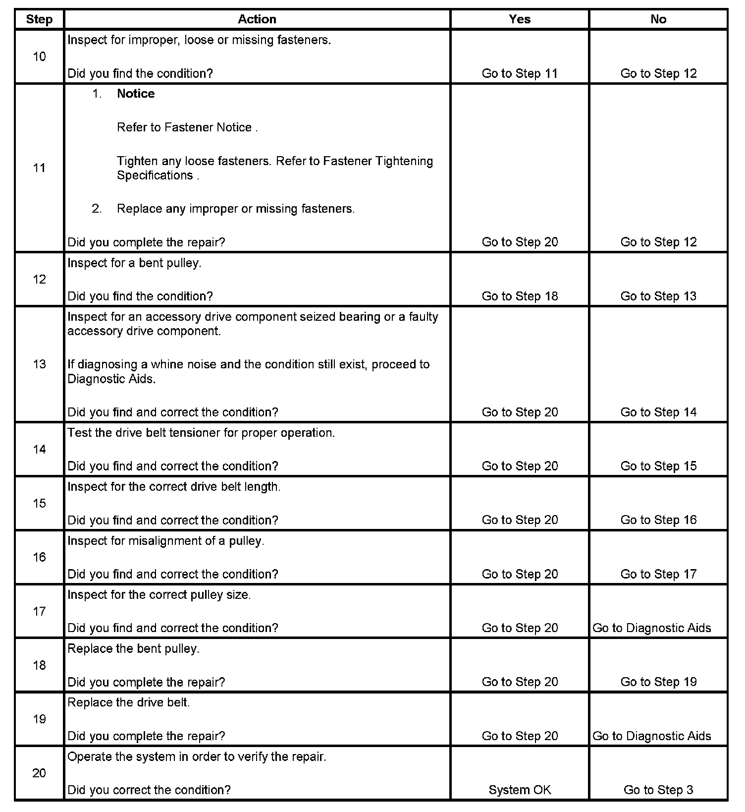

Drive Belt Chirping, Squeal, and Whine Diagnosis
Drive Belt Chirping, Squeal, and Whine Diagnosis
Diagnostic Aids
^ A chirping or squeal noise may be intermittent due to moisture on the drive belts or the pulleys. It may be necessary to spray a small amount of water on the drive belts in order to duplicate the customers concern. If spraying water on the drive belt duplicates the symptom, cleaning the belt pulleys may be the probable solution.
^ If the noise is intermittent, verify the accessory drive components by varying their loads making sure they are operated to their maximum capacity. An overcharged A/C system, power steering system with a pinched hose or wrong fluid, or a generator failing are suggested items to inspect.
^ A chirping, squeal or whine noise may be caused by a loose or improper installation of a body or suspension component. Other items of the vehicle may also cause the noise.
^ The drive belts will not cause a whine noise.
Test Description
The numbers below refer to the step numbers on the diagnostic table.
2. The noise may not be engine related. This step is to verify that the engine is making the noise. If the engine is not making the noise do not proceed further with this table.
3. The noise may be an internal engine noise. Removing the drive belts one at a time and operating the engine for a brief period will verify the noise is related to the drive belt. When removing the drive belt the water pump may not be operating and the engine may overheat. Also DTCs may set when the engine is operating with the drive belts removed.
4. Inspect all drive belt pulleys for pilling. Pilling is the small balls or pills or it can be strings in the drive belt grooves from the accumulation of rubber dust.
6. Misalignment of the pulleys may be caused from improper mounting of the accessory drive component, incorrect installation of the accessory drive component pulley, or the pulley bent inward or outward from a previous repair. Test for a misaligned pulley using a straight edge in the pulley grooves across two or three pulleys. If a misaligned pulley is found refer to that accessory drive component for the proper installation procedure for that pulley.
10. Inspecting of the fasteners can eliminate the possibility that a wrong bolt, nut, spacer, or washer was installed.
12. Inspecting the pulleys for being bent should include inspecting for a dent or other damage to the pulleys that would prevent the drive belt from not seating properly in all of the pulley grooves or on the smooth surface of a pulley when the back side of the belt is used to drive the pulley.
14. This test is to verify that the drive belt tensioner operates properly. If the drive belt tensioner is not operating properly, proper belt tension may not be achieved to keep the drive belt from slipping which could cause a squeal noise.
15. This test is to verify that the drive belt is not too long, which would prevent the drive belt tensioner from working properly. Also if an incorrect length drive belt was installed, it may not be routed properly and may be turning an accessory drive component in the wrong direction.
16. Misalignment of the pulleys may be caused from improper mounting of the accessory drive component, incorrect installation of the accessory drive component pulley, or the pulley bent inward or outward from a previous repair. Test for a misaligned pulley using a straight edge in the pulley grooves across two or three pulleys. If a misaligned pulley is found refer to that accessory drive component for the proper installation procedure for that pulley.
17. This test is to verify that the pulleys are the correct diameter or width. Using a known good vehicle compare the pulley sizes.
19. Replacing the drive belt when it is not damaged or there is not excessive pilling will only be a temporary repair.
Step 1 - Step 9:
Step 10 - Step 20:
